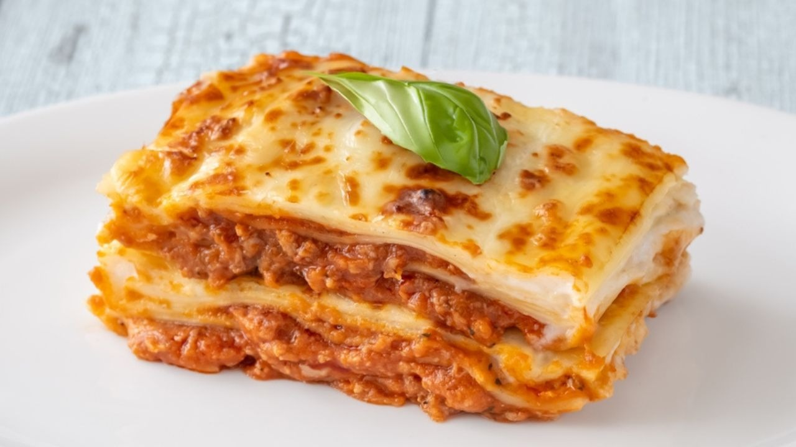

Papo de Panela
Papo de Panela

Receitas
Bolinho de Batata com Queijo

Casquinha crocante por fora, recheio derretendo por dentro. Irresistível!
Lasanha de Carne Simples
Camadas de massa, molho vermelho e queijo derretido num clássico irresistível.
Espaguete ao Alho e Óleo com Camarão

Simples e sofisticado: o sabor do mar com o perfume do alho e do azeite.
Empadão de Frango com Requeijão

Casquinha dourada e recheio cremoso, um clássico do forno brasileiro.